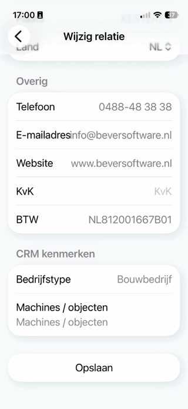

Bijvoorbeeld van top X klanten van kenmerk A, bij Opvragen relaties, tabblad CRM.

Opmerking: Op het tabblad CRM, zijn ook de verzonden SMS-berichten te zien.
Per klant kunnen met behulp van variabel samen te stellen elementen allerlei eigenschappen of kenmerken vastgelegd worden. De eigenschappen die vastgelegd worden, verschillen per klant en moeten dus ook op klantniveau kunnen verschillen.
Er kunnen uitgebreide selecties hierop uit te voeren worden.
Een aantal eigenschappen is gekoppeld aan totalen uit de database van Powerall, bijvoorbeeld omzet bedragen van de afgelopen periodes.
Voorbeelden van kenmerken zijn bijvoorbeeld:
Voor een deel is beperking van de invoermogelijkheden wenselijk. Dit kan bijvoorbeeld gedaan worden door bij elke eigenschap een keuzelijst met de mogelijkheden te tonen. Deze waardes worden door de gebruiker eenmalig in het systeem vastgelegd. Dit maakt het mogelijk om analytische functies op de gegevens uit te kunnen voeren.
Bijvoorbeeld van top X klanten van kenmerk A, bij Opvragen relaties, tabblad CRM.
Opmerking: Op het tabblad CRM, zijn ook de verzonden SMS-berichten te zien.
…
Bij Relaties CRM app kunnen de CRM kenmerken toegevoegd of bewerkt worden. Om dit te doen, doorloopt u de volgende stappen:
Ga naar de relatie.
Blader naar CRM kenmerken.
Kies voor de knop Toevoegen. of Bewerken.

Selecteer het kenmerk.
Vink aan wat van toepassing is (bij een aanvink vakje).
Kies voor de knop TOEVOEGEN.
De CRM kenmerken zijn bijgewerkt.
Met het selectieprogramma (BRS) kunnen klantlijsten gemaakt worden om mailingen te doen. Er kunnen verschillende lijsten aangemaakt worden. Daarin worden dan de kenmerken vastgelegd van de klantlijst. Per lijst kan opgegeven worden welke;
Zie onderstaande schermafdruk.
D.m.v. knop Functies kan de klantlijst vervolgens worden afgedrukt, geëxporteerd worden naar Excel of er kunnen bezoeknotities gegenereerd worden.
Copyright ©